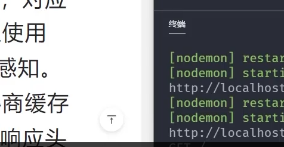

强制缓存 使用 http1.0 的 【expires】 实现

强制缓存 使用 http1.1 的 【cache-control】 实现
- 使用 http1.1 的 cache-control max-age实现

协商缓存 使用 http1.1 的 【cache-control】 实现
- 响应头设置 cache-control: no-cache 启用协商缓存
- 响应头设置 last-modified 告诉客户端资源最近修改的时间
- 请求头通过 if-modified-since 告诉服务端客户端缓存资源最近修改时间
-
服务端获取请求的资源，获取 if-modified-since 和
资源最近修改的时间，来判断客户端缓存的资源是否过期，没有过期响应304，过期则响应最新的资源和通过
last-modified 再次告知资源最近的更新时间
基于ETag的协商缓存
- 使用 http1.1 的 cache-control 实现
- 响应头设置 cache-control: no-cache 启用协商缓存
-
后端计算出请求资源的指纹信息，并通过响应头设置 etag
告诉客户端资源的指纹信息
- 请求头会通过 if-none-match 告诉服务端已经缓存资源的指纹信息
-
服务端获取请求的资源并重新计算资源的指纹信息，获取请求头
if-none-match，通过两个指纹信息来判断客户端缓存的资源是否过期，没有过期响应304，过期则响应最新的资源和通过
etag 再次告知资源最新的指纹信息
